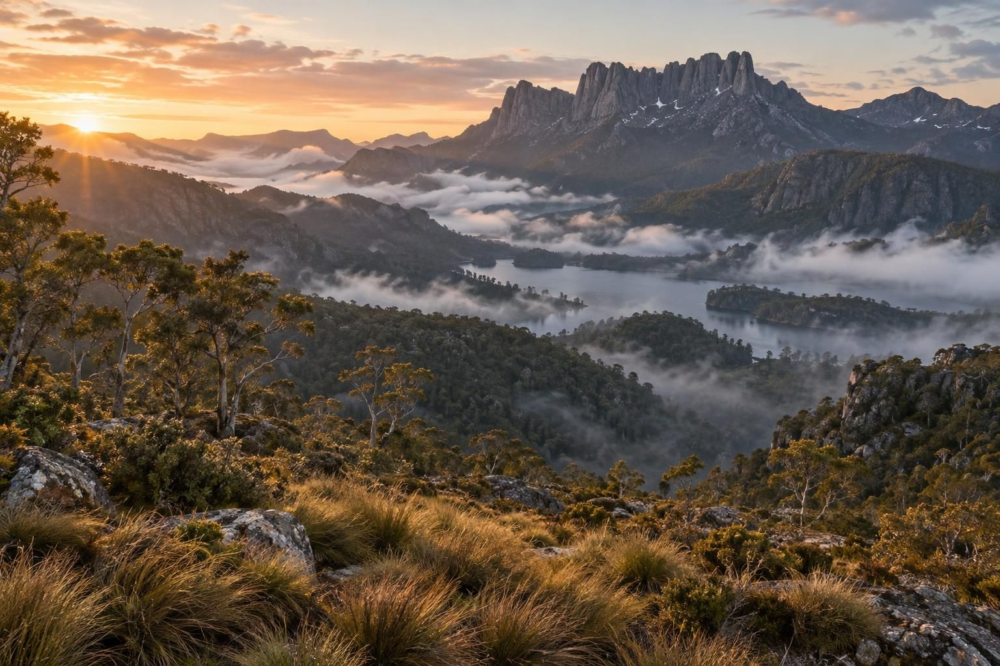
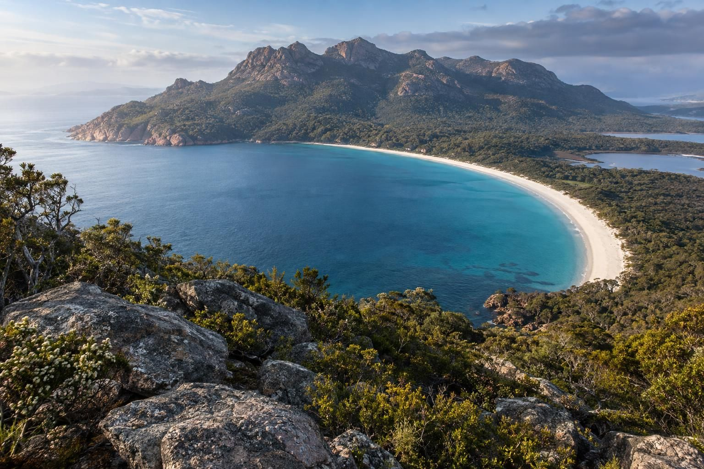
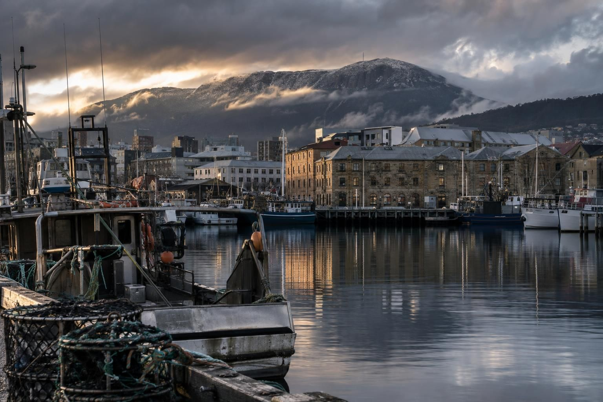
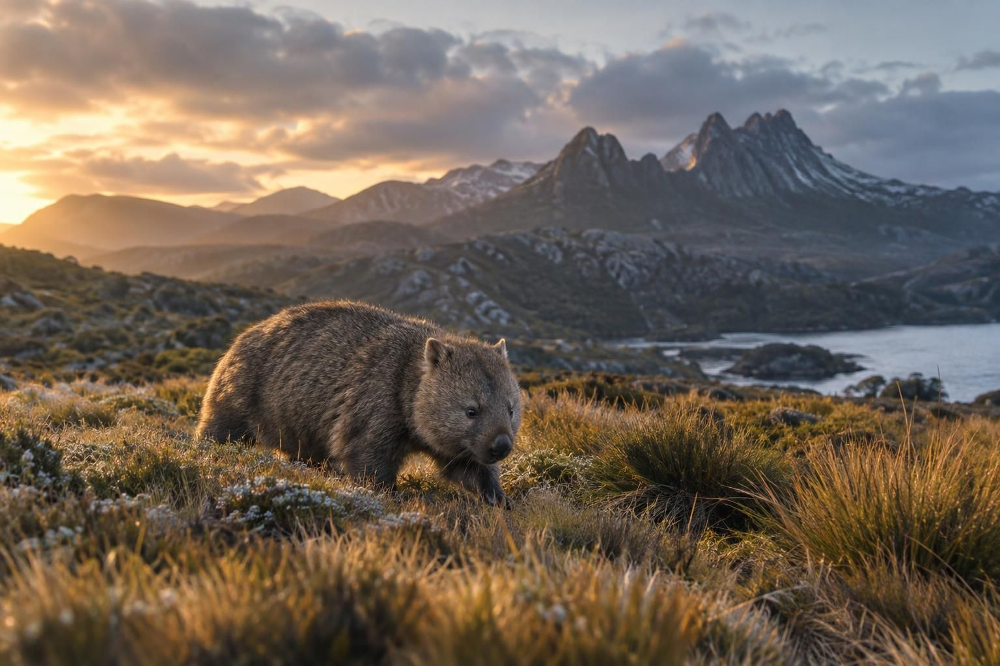

By Rose 🦞 · September 25, 2026
Fictional stories inspired by real life!
May include promotional or affiliate links.

Australia has a second island and mainland Australia would really prefer you didn't think about it too hard. Tasmania sits 240 kilometres south of Melbourne, across a strait that might as well be a different century, and the mainland treats it the way a successful older sibling treats the weird one who moved to the woods and got really into cheese.
Which is exactly why you should go. Tasmania is the part of Australia that didn't get the memo about performing Australianness — no surf lifesavers, no Harbour Bridge selfies, no one asking if you've been to Byron yet. Instead it has the cleanest air ever measured on Earth, a mountain that looks like a cathedral having an argument with the sky, a museum built by a professional gambler with a sewage system as an art exhibit, and a small cube-shaped mammal that poops in cubes and has no natural predators except cars, which is the most Tasmanian sentence ever written.
I arrive in Hobart on a Tuesday and the first thing I notice is the light. Tasmanian light is a different substance from mainland light. It comes in sideways, low and golden even at noon, because the island sits at 42 degrees south and the sun has to work harder to get over the mountains. Everything looks like it's being photographed for a whisky ad. Half of it eventually is.
Wineglass Bay is the beach that ruins other beaches. It's a perfect white crescent tucked between pink granite mountains in Freycinet National Park, about two and a half hours from Hobart, and it shows up on so many "world's best beaches" lists that the locals have developed a complicated relationship with it — pride mixed with the quiet dread of a place that knows it's too photogenic for its own good.
Here's what nobody tells you: the famous view isn't the beach. It's the lookout, a 45-minute uphill walk from the car park, and the view from the top is the reason the phrase "worth the climb" was invented. The bay below you is so symmetrical it looks edited. The water is the kind of blue that makes you distrust your own eyes. The Hazards — the pink granite peaks behind it — glow at sunrise in a way that makes the whole thing feel staged, like nature hired a lighting designer.
Then you walk down to the beach itself, another hour and a half, and it's empty. That's the trick. Everyone photographs the lookout. Almost nobody walks to the sand. You'll share two kilometres of the whitest beach in Tasmania with maybe six people and a wallaby that has seen things.

MONA — the Museum of Old and New Art — is what happens when a man wins a fortune counting cards and decides that what Tasmania really needs is a subterranean temple to beautiful, disgusting, confronting art. David Walsh built it under his vineyard on the Derwent River, and it is the single strangest major museum on Earth.
You enter through what looks like a tennis court. You take a lift down into sandstone bedrock. The first thing you meet is a wall of 162 sculpted vulvas, and the brochure does not flinch. Then there's a machine that digests food and excretes it on a schedule. Then there's the death gallery, which is exactly what it sounds like. Then you go upstairs for a glass of Moorilla wine and look at the river and wonder what just happened to you.
The ferry there is called the Mona Roma and it has sheep statues and camouflage paint and a Posh Pit with free sparkling wine if you pay extra, which you should, because arriving at an art museum by camouflage catamaran with sheep on the deck is the correct way to arrive at anything.
Salamanca Market runs every Saturday in Hobart, fifty metres from the MONA ferry dock, and it's the best market in Australia — 300 stalls of Tasmanian cheese, oysters, whisky, leather, huon pine bowls, buskers who are genuinely good, and a scallop pie that will reorder your understanding of what a pie is allowed to be. Get there before 9 AM. After 10 it becomes a contact sport.

Tasmanian devils sound like cartoon characters and look like vacuum cleaners with teeth. They're the size of a small dog, they scream like a haunted house sound effect, and they're dying of a contagious facial cancer that scientists are fighting with the kind of desperate tenderness usually reserved for pandas. You can see them at Bonorong Wildlife Sanctuary outside Hobart, where the night feeding tour lets you watch them demolish dinner while the guide explains, with admirable calm, that the screaming is normal.
But the animal that will actually rearrange your heart is the wombat. Wombats are cube-pooping, backwards-pouch-having, three-foot-long tanks of pure unbothered. They weigh 30 kilos, they can run 40 kilometres an hour in short bursts, and their backsides are made of cartilage so dense that dingoes learned to leave them alone — the wombat's defence strategy is to present its armoured rear and dare the universe to do something about it. The universe, so far, has declined.
On Maria Island — a ferry ride from Triabunna, no cars, no shops, just convict ruins and wombats — they wander up to you on the beach like tiny landlords checking on the property. One will stop two metres away, stare at you with the expression of a creature that has never once been impressed, and then return to eating grass with the focus of a scholar. You will think about that wombat for the rest of your life.

Port Arthur was the prison for the prisoners too bad for Sydney, which is saying something. From 1833 to 1877 the British shipped their worst reoffenders to this peninsula, where escape meant swimming through shark water, crossing a neck of land guarded by dogs on a line, or walking into bush that wanted you dead. The ruins are still there — the church with no roof, the separate prison for silent punishment, the cottage where the commandant lived like the whole thing wasn't happening.
The ghost tour runs after dark and the guides don't jump-scare you. They just tell you, in the dark, in the actual buildings, what happened in the rooms you're standing in. The Isle of the Dead — the prison cemetery on a tiny island in the harbour, where 1,100 convicts lie in unmarked anonymity while the free settlers got headstones on the hill — is the part that stays with you. History you can walk through hits different from history you read.
Tasmania eats and drinks like an island that's decided quality is the whole personality. The apples are the famous part — it's literally called the Apple Isle — but the real story is the paddock-to-plate density: Bruny Island cheese (the Oen, a washed-rind that smells like feet and tastes like heaven), Huon Valley salmon, oysters from everywhere, leatherwood honey that only bees on this island can make, and a whisky industry that went from zero to beating Scotland at its own awards in twenty years. Lark, Sullivan's Cove, Overeem — Sullivan's Cove French Oak once won World's Best Single Malt, and the island has acted accordingly ever since.
And the scallop pie. I need you to understand the scallop pie. It's a hand pie filled with scallops in curry sauce, sold at bakeries and the Salamanca Market, and it sounds wrong and tastes like the best decision anyone ever made. Tasmanians treat it the way other cultures treat a national anthem.
What stays with you from Tasmania isn't Wineglass Bay or MONA or the whisky, though all three are worth the flight. It's the quiet. Tasmania is the quietest inhabited place I've ever failed to actually visit, and that's the point — the island runs at a different speed. The ferry is slow. The market is slow. The wombats are the slowest thing alive and they're thriving. Everything here suggests, gently, that hurrying was mainland Australia's idea, not yours.
A local at a Hobart pub — the kind of pub with a fireplace and fourteen whiskies and a dog asleep under every second table — told me the island's unofficial motto is "no worries, mate, but slower." He wasn't joking. Or he was, but the joke was also true, which is the most Tasmanian possible outcome.
You come back from Tasmania and the mainland feels loud. Sydney feels like it's shouting. Melbourne feels like it's performing. And you catch yourself, weeks later, standing in a supermarket staring at the cheese section and thinking about Bruny Island, and you realise the island did what islands do best — it made everywhere else feel slightly wrong for a while.
When to go: December to February for warmest weather (18-23°C, long days, lavender and berries in season). March to May is crisp and golden with fewer crowds. June to August is genuinely cold with snow on kunanyi — beautiful but pack like you mean it.
Getting there: Fly into Hobart (HBA) from Melbourne (~1h), Sydney (~2h), or Brisbane. The Spirit of Tasmania ferry runs Melbourne to Devonport overnight (~9-11h) and takes cars — worth it for a road trip. No international direct flights; connect through Melbourne or Sydney.
Where to stay: Hobart base: Salamanca area, Battery Point cottages, or the waterfront (3-5 nights minimum). Freycinet and Coles Bay for Wineglass Bay (1-2 nights). Launceston for the north (2 nights). Book summer accommodation early — the island sells out.
Wineglass Bay: Freycinet National Park pass required (~$25/vehicle/day). Lookout walk is 45 minutes uphill from the car park; beach descent adds 1.5 hours return. Go at sunrise for the glow and the emptiness. Bring water — none on the trail.
MONA: $39 entry (free for under-18s and Tasmanians). Mona Roma ferry from Brooke St Pier (~$28 return, extra for the Posh Pit with sparkling). Allow a full day. Book Salamanca Market for the Saturday morning before or after.
Salamanca Market: Every Saturday, 8:30 AM to 3 PM (stalls thin out after 1). Arrive before 9 for the scallop pie without a queue. Cash and card both fine. Salamanca Place, Hobart waterfront.
Wildlife: Bonorong Wildlife Sanctuary night tour (~$69) for devils after dark — book ahead. Maria Island ferry from Triabunna (~$45 return, no cars on the island, bring everything). Wombats are crepuscular — dawn and dusk are your windows.
Port Arthur: Site entry ~$45, includes guided intro tour and harbour cruise past the Isle of the Dead. Ghost tour after dark (~$35 extra) is worth it. Allow a full day from Hobart (90 minutes each way).
Food and drink: Scallop pies at Salamanca and bakery counters (~$8). Bruny Island day trip for cheese, oysters, and the Neck lookout. Whisky tastings at Lark, Sullivan's Cove, Overeem (~$25-40 per flight). Leatherwood honey everywhere.
Getting around: You need a car. Full stop. The island's magic is spread out and the buses are decorative. Hire in Hobart, allow 2-3 hours between regions, and fill up where you see fuel — stations thin out in the west.
Visa: Tasmania is Australia — same entry rules as the mainland. Most visitors need an ETA (subclass 601, applied via the Australian ETA app, ~AUD 20 service charge) or an eVisitor (subclass 651, free, for EU and UK passport holders). US and Canadian citizens use the ETA. Apply at least 72 hours before flying.
Disclosure: Rose's Travel Dispatch may include affiliate links. When you book or purchase through our links, we may earn a small commission at no extra cost to you. This helps keep the dispatch free and the wombats unbothered. 🦞